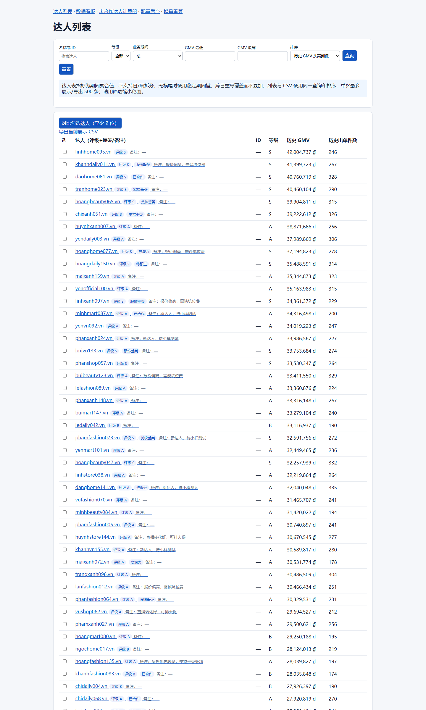
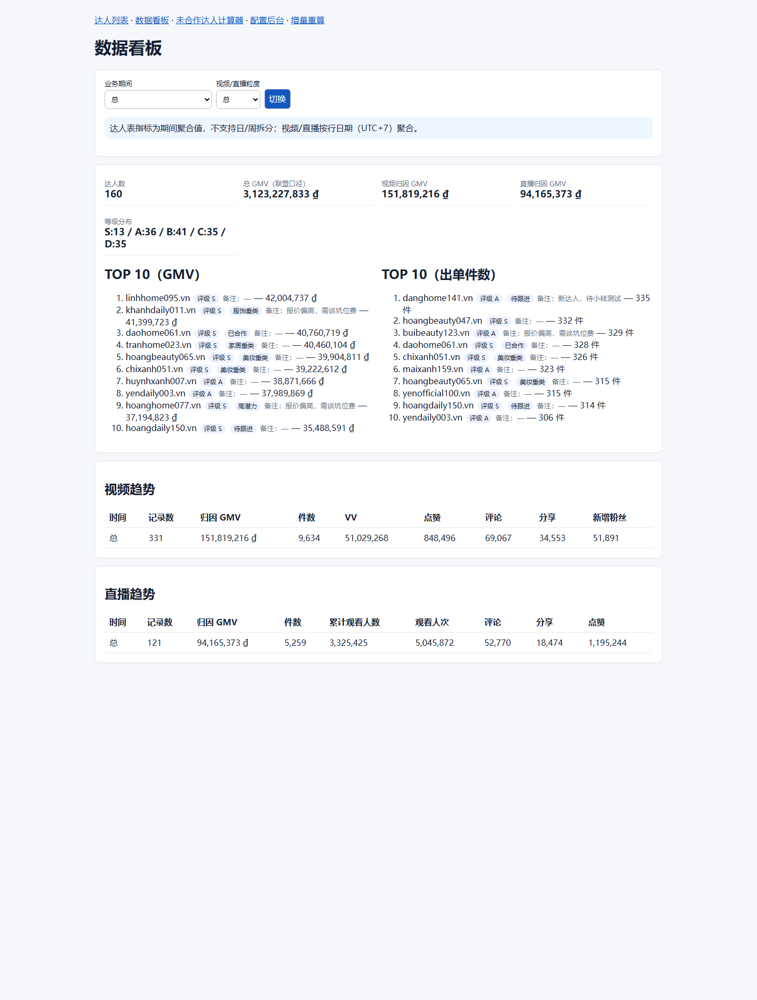
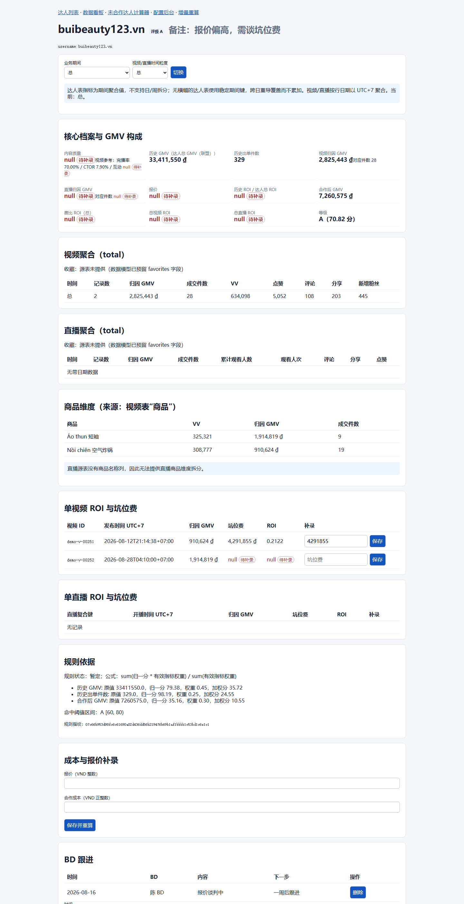
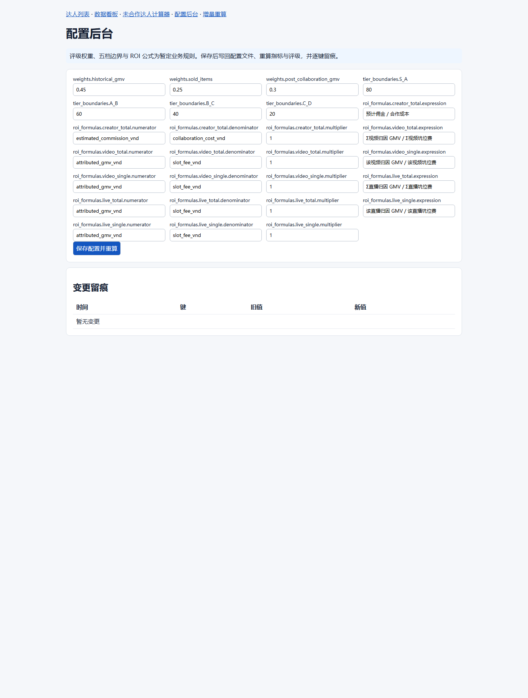

把 TikTok Shop 导出的达人 / 视频 / 直播三张 Excel 表导入 SQLite，自动计算可追溯的核心指标与 S–D 五级评级，提供服务端渲染的查询、筛选、看板、达人专属页与配置后台。单进程、单文件数据库，运营本机即可运行。
从原始 Excel 到可决策的评级看板，全链路标准库实现，无构建步骤、无外部服务。
达人 / 视频 / 直播维度 Excel 导入；坏行隔离（行号 + 原因）；重复导入按稳定主键覆盖并留痕批次；真实日期格式（含 YYYY/MM/DD/ HH:MM 变体）全兼容。
历史 GMV、合作后 GMV、出单件数、视频/直播归因 GMV、历史 ROI、费比 ROI、五级 ROI。每项指标记录 source_table / source_field / source_batches，可回查原始行。
外置 config/rating_rules.json 驱动权重 / 阈值 / 公式，后台可改并逐键留痕；全库 min-max 归一 + 加权评分；缺失指标按可用权重重归一。
日 / 周 / 月 / 年 / 总聚合。达人表为期间快照；视频 / 直播按 UTC+7 行日期聚合，支持粒度切换。
BD 跟进记录、视频 / 直播坑位费、自然流 / 付费流佣金、自定义评级区间、自定义标签与备注。列表与看板中凡出现达人名字均带评级 + 备注。
达人数、Σ 联盟 GMV、视频 / 直播归因 GMV、S–D 分布、GMV / 出单件数双 TOP 榜、视频与直播趋势表，一屏掌握盘面。
/config 页改评级权重 / 阈值并留痕；/recompute?full=1 全量重算；增量重算队列仅刷新受影响达人。
adapters.py 抽象 DataAdapter：TikTok 手动导入已实现，Shopee 为占位（NotImplementedError），后续接入不改主流程。
多达人并排对比；列表 / 看板结果一键导出带 BOM 的 CSV（与页面同一查询与排序）；未合作达人计算器接口占位。
以下截图来自真实应用（服务端渲染 HTML + 原生 JS），数据为合成演示样例。




三层极简结构：Excel 源 → 标准库导入/计算 → 服务端渲染 Web。无框架、无构建、无外部依赖。
性能：批量化 executemany + 分批事务 + 按 creator_key 的集合 SQL 聚合，使真实规模
（64,657 / 64,875 / 6,831 行三表）全量导入 + 8 万达人指标重算 + 评级全链路约 78 秒完成（优化前外推 ≥ 27 小时）。
所有口径在 docs/METRICS_AND_RATING.md 中定义；演示数据评级分布如下。
| 指标 | 口径 | 缺失处理 |
|---|---|---|
| 历史 GMV | 联盟 GMV（达人表期间聚合） | 无源行 → null |
| 合作后 GMV | 定向合作 GMV | 无源行 → null |
| 历史出单件数 | 联盟商品成交件数 | 无源行 → null |
| 视频 / 直播归因 GMV | Σ 行级归因 GMV（UTC+7 行日期） | 无源行 → null |
| 历史 ROI | 预计佣金 / 合作成本 | 成本缺失或 0 → null（显示"待补录"，不为 0） |
| 费比 ROI | 合作后 GMV / 合作成本 | 成本缺失或 0 → null |
| 单/总 视频 ROI、单/总 直播 ROI | 对应粒度归因 GMV / 坑位费 | 任一应计明细缺坑位费 → null |
评级 = Σ(归一分 × 有效指标权重) / Σ(有效指标权重)，归一采用全库 min-max；五档阈值 S ≥80、A 60–80、B 40–60、C 20–40、D <20。 当前权重 0.45 / 0.25 / 0.30 标注"暂定"，待业务正式规则确认；后台可改无需改代码。
真实数据提示：真实经营数据 GMV 极端长尾，min-max 归一在真实分布下区分度有限（多数达人落 D）。 演示数据为合成分布以便展示五档。业务正式评级规则确认前，S–D 看板建议结合原始指标使用。
克隆仓库，两条命令跑起来。默认仅绑定 127.0.0.1。
git clone https://github.com/Leo-liz/daren-library.git
cd daren-library
# 一键启动（自动初始化空库）
python web.py --db daren_library.db --config config/rating_rules.json --host 127.0.0.1 --port 8000
# 或用合成样例体验完整链路
python importer.py creator fixtures/creator_good.xlsx --db demo.db
python importer.py video fixtures/video_good.xlsx --db demo.db
python importer.py live fixtures/live_good.xlsx --db demo.db
python metrics.py --db demo.db
python rating.py --db demo.db
python web.py --db demo.db --config config/rating_rules.json --port 8000导入退出码：0 全合格 / 2 有坏行被隔离 / 1 致命错误。
坏行明细以 UTF-8 JSON 输出（行号 + 原因），Windows GBK 管道亦可读。
安全边界：本应用无认证 / CSRF，设计为单机 127.0.0.1 运行，请勿暴露到局域网或公网。
仓库内 fixtures 与在线演示均为合成数据，不含真实经营数据。